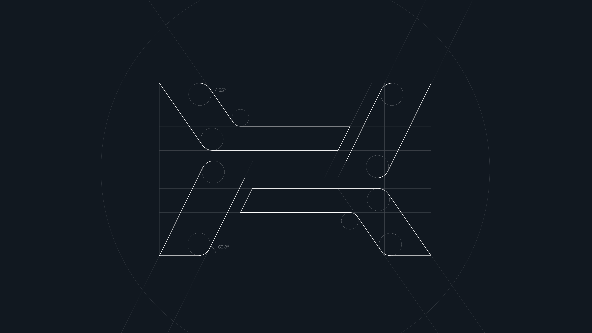

Chargement du catalogue…
HEXONIC
Step Viewer
Catalogue 3D des brasés
🔧 Brasés
📋 Plaques & joints
🔩 Tubulaires
Produits :
—
Avec STEP :
—
Avec DWG :
—
Avec IFC :
—
Famille :
Toutes
Liens :
Tous
Avec STEP
Avec DWG
Avec IFC
Châssis :
Tous
PN :
Tous
PN10
PN16
PN25
—
produit(s)
Aucun résultat
Modifiez vos critères de recherche.
📏 Mesure
✕ Reset
🪄 Iso
🔧
✕
✦ Aspect global
Origine
Inox
Laiton
Chrome
Cuivre
🎨
🎨 Mat.1
💡 Direct.
1.10
🌅 Ambient
1.8
🪞 Miroir
3.0
🎯 Sélectionner un groupe
Matériau :
Origine
Inox
Laiton
Chrome
Cuivre
✕
Groupes
?
💾
Message → Claude Code
✕
📋 Copier
Infos techniques
✕
Cliquez sur un groupe dans la liste pour afficher ses informations techniques.